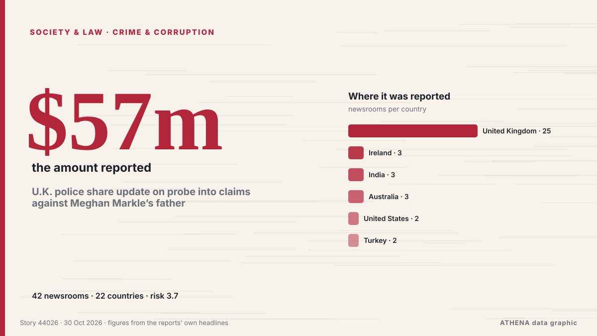

U.K. police share update on probe into claims against Meghan Markle’s father

The Metropolitan Police acknowledged receiving a letter in 2019 regarding accusations about Meghan Markle’s father but did not share this information with other law agencies. de Arab News
Informado de forma independiente por 42 medios de 22 países desde el 24 oct; el primero fue Arab News; la cobertura sigue extendiéndose. ATHENA califica el riesgo como moderado (3.7/10), sobre todo por la gravedad del daño descrito y su alcance geográfico y sectorial. La confianza es del 88 % (alta): lo corroboran 42 medios independientes, con una fiabilidad media de las fuentes del 72 %.
Por qué importa: Los cambios legales y de política modifican derechos, obligaciones y servicios públicos para las personas afectadas.
Qué ha cambiado: 15 informaciones nuevas de 11 redacciones en las 24 horas hasta el 30 oct.
Primer titular: UK police says ‘claims’ over Meghan Markle’s dad not sent to other law enforcement
Los titulares se muestran en inglés, tal como se publicaron.
De un vistazo
Seleccionado, puntuado y redactado por la metodología publicada de ATHENA. Ningún editor interviene en eventos concretos. Cómo se elabora ›
| 24 Oct 12:43 UTC | 5 |
|---|---|
| 24 Oct 18:43 UTC | 1 |
| 25 Oct 00:43 UTC | 0 |
| 25 Oct 06:43 UTC | 0 |
| 25 Oct 12:43 UTC | 1 |
| 25 Oct 18:43 UTC | 0 |
| 26 Oct 00:43 UTC | 0 |
| 26 Oct 06:43 UTC | 0 |
| 26 Oct 12:43 UTC | 1 |
| 26 Oct 18:43 UTC | 2 |
| 27 Oct 00:43 UTC | 2 |
| 27 Oct 06:43 UTC | 6 |
| 27 Oct 12:43 UTC | 1 |
| 27 Oct 18:43 UTC | 0 |
| 28 Oct 00:43 UTC | 2 |
| 28 Oct 06:43 UTC | 3 |
| 28 Oct 12:43 UTC | 1 |
| 28 Oct 18:43 UTC | 2 |
| 29 Oct 00:43 UTC | 4 |
| 29 Oct 06:43 UTC | 10 |
| 29 Oct 12:43 UTC | 10 |
| 29 Oct 18:43 UTC | 3 |
| 30 Oct 00:43 UTC | 0 |
| 30 Oct 06:43 UTC | 0 |
| 30 Oct 12:43 UTC | 4 |
| 28 Oct 16:42 UTC | 2.4 |
|---|---|
| 28 Oct 18:25 UTC | 3.1 |
| 30 Oct 15:26 UTC | 3.7 |
Por qué estas cifras
Importancia
Riesgo
Confianza
La cobertura: quién informó y cuándo
titular tal como se publicó · abre el original- Arab News · Arabia Saudí · Saudi ArabiaUK police says ‘claims’ over Meghan Markle’s dad not sent to other law enforcement
- The Guardian · Reino Unido · United KingdomMet says it shared allegations about Meghan’s father with her but not other forces
- NBC News (World) · Estados Unidos · United StatesU.K. police received claims about Meghan’s father in 2019 but didn’t alert other forces
- Anadolu Agency (English) · Turquía · TurkeyLondon police acknowledge receiving allegations against Meghan Markle's father, not sharing them with authorities
- RTÉ News · Irlanda · IrelandMet police received 'claims' about Meghan Markle's father
- CNA (Channel NewsAsia) · Singapur · SingaporeUK police say 'claims' over Meghan Markle's dad not sent to other law enforcement
- ProtoThema English ·Meghan Markle’s father admits paying for sex but denies child abuse allegations as letter reveals bitter family rift
- Evening Standard (London) · Reino Unido · United KingdomZoe Ball lost BBC Radio 2 gig because she was 'over 50', dad Johnny claims
- Stuff · Nueva Zelanda · New ZealandUK police were warned Thomas Markle posed threat to Meghan and Harry
- Times of India · IndiaTyler Perry lists 22.5-acre mansion where Harry and Meghan stayed for $57m
- Stuff · Nueva Zelanda · New ZealandChild hurt in ‘appalling’ Myers Park attack stable, police say
- Belfast Telegraph · Reino Unido · United KingdomJeffrey Donaldson ‘gifted’ himself a birthday rape at Westminster office, alleged victim claims
- CGTN (China) · ChinaChina lodges representation over UK police's excessive law enforcement
- Indian Express · IndiaThief shot her father in the leg, Pune girl punched him in the stomach
- Liverpool Echo · Reino Unido · United KingdomMum red-faced as school send official warning letter over what she wore at pick up
- Fortune · Estados Unidos · United StatesI helped a billionaire couple tell their kids they’d already received their inheritance. They didn’t take it well
- Anadolu Agency (English) · Turquía · TurkeyChina protests UK’s ‘excessive' border law enforcement
- Newstalk · Irlanda · IrelandFamily packages will face €2 handling charge from Sunday
- RTÉ News · Irlanda · IrelandEnforcement of flavoured vapes ban could take a year
- The Scotsman · Reino Unido · United KingdomBonfire night will see the largest number of police deployed to Scotland since Trump visit
- Birmingham Mail · Reino Unido · United KingdomPolice failings exposed after psychotic patient killed dad at 90mph on Soho Road
- The Herald (Scotland) · Reino Unido · United KingdomBonfire Night to have 'largest police deployment since Trump visit'
- Manchester Evening News · Reino Unido · United KingdomMum fuming as school sends her warning letter over her clothing choices at pick up time
- MyLondon · Reino Unido · United KingdomLondon dad dies in agony after doctors 'mistook' cancer for pancreatitis
- The Daily Star — page reader · Bangladés · BangladeshJatrabari man dies after alleged beating; family questions police handling
- The Herald · Zimbabue · ZimbabweActress Amanda Manku’s father to be sentenced in January
- Bangkok Post — page reader · Tailandia · ThailandChadchart rejects claims of relief rift
- NDTV · IndiaTamil Nadu Minister S Keerthana Denies Bribe Allegations, Warns Of Legal Action
- Daily Trust · NigeriaPolice hand over 69 bags of suspected cannabis to NDLEA
- Sydney Morning Herald · AustraliaLeaked letter reveals growing Labor rift over Kimberley fracking
- IOL · Sudáfrica · South AfricaPinetown father recounts shootout during attempted hijacking outside his home
- The Scotsman · Reino Unido · United KingdomReaders Letters: Fifty years on, another Healey bungles Budget
- BBC News · Reino Unido · United KingdomWatch: VHS tapes and computers handed to police as Thomas Markle is investigated
- Sydney Morning Herald · AustraliaPolice find sex offender who escaped custody
- Daily Tribune · Filipinas · PhilippinesQC PLEB receives complaint over police action at DAR protest
- Daily Tribune · Filipinas · PhilippinesAnother alleged Velasco driver claims cash deliveries to Sara
- Birmingham Mail · Reino Unido · United KingdomPolice name Birmingham number you should never answer on your phone
- New Straits Times · Malasia · MalaysiaViolent threats from smugglers a part of life for border enforcement personnel
- BTA (English) · BulgariaPM Tells Police Academy Graduates He Expects Them to Restore Sense of Justice in Society
- Sky News (World) · Reino Unido · United KingdomPolice to examine Thomas Markle's digital devices after child sex abuse image claims